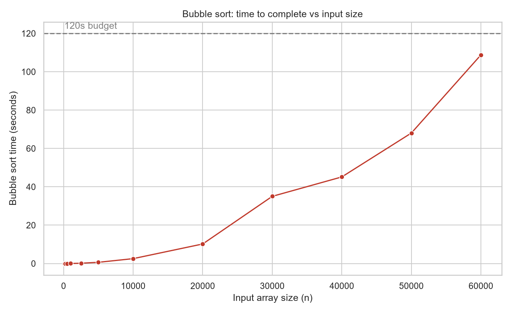
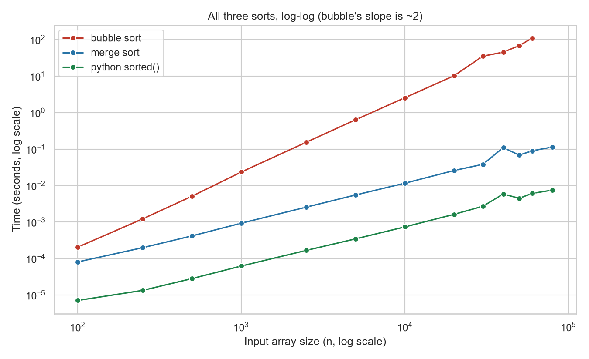
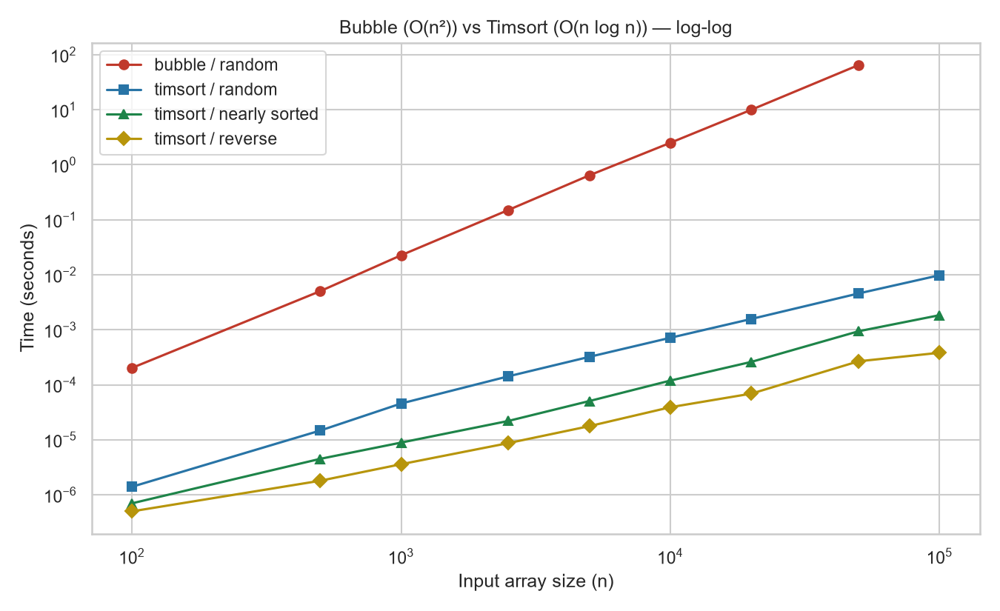
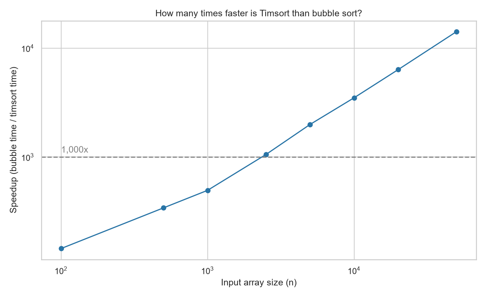

Machine: Intel64 Family 6 Model 183 Stepping 1, GenuineIntel, 24 logical cores. Run: 2026-10-12T13:29:51.705338.
Biggest bubble sort that finished inside the 120s budget: n = 60,000 in 108.8s. Bubble sort halted: exceeded 2-minute budget at n=80000 (projected 193s from n=60000).


| n | bubble (s) | merge (s) | python (s) | bubble/python |
|---|---|---|---|---|
| 100 | 0.0002 | 0.0001 | 0.0000 | 29x |
| 250 | 0.0012 | 0.0002 | 0.0000 | 91x |
| 500 | 0.0051 | 0.0004 | 0.0000 | 181x |
| 1000 | 0.0234 | 0.0009 | 0.0001 | 376x |
| 2500 | 0.1539 | 0.0026 | 0.0002 | 921x |
| 5000 | 0.6325 | 0.0055 | 0.0003 | 1,828x |
| 10000 | 2.5411 | 0.0116 | 0.0007 | 3,458x |
| 20000 | 10.1886 | 0.0258 | 0.0016 | 6,271x |
| 30000 | 35.0337 | 0.0381 | 0.0027 | 12,967x |
| 40000 | 45.1527 | 0.1094 | 0.0059 | 7,689x |
| 50000 | 68.0462 | 0.0681 | 0.0045 | 15,225x |
| 60000 | 108.7889 | 0.0890 | 0.0061 | 17,883x |
| 80000 | - | 0.1140 | 0.0075 | - |
| n1 -> n2 | actual bubble ratio | theoretical n^2 | actual merge ratio | theoretical n log n |
|---|---|---|---|---|
| 100 -> 250 | 5.98 | 6.25 | 2.46 | 3.00 |
| 250 -> 500 | 4.17 | 4.00 | 2.10 | 2.25 |
| 500 -> 1000 | 4.59 | 4.00 | 2.23 | 2.22 |
| 1000 -> 2500 | 6.58 | 6.25 | 2.76 | 2.83 |
| 2500 -> 5000 | 4.11 | 4.00 | 2.15 | 2.18 |
| 5000 -> 10000 | 4.02 | 4.00 | 2.10 | 2.16 |
| 10000 -> 20000 | 4.01 | 4.00 | 2.23 | 2.15 |
| 20000 -> 30000 | 3.44 | 2.25 | 1.48 | 1.56 |
| 30000 -> 40000 | 1.29 | 1.78 | 2.87 | 1.37 |
| 40000 -> 50000 | 1.51 | 1.56 | 0.62 | 1.28 |
| 50000 -> 60000 | 1.60 | 1.44 | 1.31 | 1.22 |
When n grows by a factor, bubble sort's time grows by about that factor squared, and merge sort's by a little more than that factor: Big O is a real prediction, not just notation.

